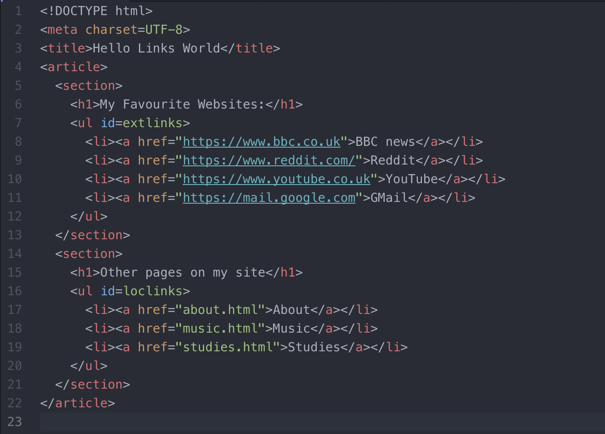

During this week we were shown out Virtual Machines (VM) and how to connect to them. I was able to connect to the VM using a secure shell and create a simple HTML page, which I was then able to view within my browser.

This log book was created on a weekly basis to record my learning within the WEBF1 unit and help me with my Literature Review. Click each week to expand the selection. Hover over images to make them larger.
During this week we were shown out Virtual Machines (VM) and how to connect to them. I was able to connect to the VM using a secure shell and create a simple HTML page, which I was then able to view within my browser.
In this weeks lecture I learned about Social Engineering and how even the smallest amount of information could lead to hackers finding out a large amount of data about you.
In the practical we looked at how data is collected by companies and how it can be safely stored and protected. We worked as a group to list data which could be collected on a daily basis, and how we can ensure it is kept up to date and not misused.
In this lecture I learned what a literature review is and how to find sources that would be relevant to the topic I am reviewing.
In the practical we spent the time researching some articles which could be useful in our literature review. After the practical I looked in more detail at articles related to the title of my literature review.
In this lecture I learned the best guidances for writing a literature review, and how best to edit it once it was written. I spent time after this lecture to review what I had already wrote, and found a few mistakes in what I had done.
In the practical we worked as a group to improve several pieces of text which were written incorrectly. They included basic spelling mistakes, as well as more complex grammatically incorrect sentences.
In this lecture I learned the basics of a webpage and how computers understand HTML and URLs to display content the the user. We were also shown the importance of every HTML website starting with <DOCTYPE html>.
In the practical I created a simple web page and uploaded it to the VM using a secure connection. I then started a web server so the page could be viewed.

In this lecture I learned the differences between markup and stylesheets, and saw a introduction into CSS. After the lecture I ensured that I had linked my stylesheet correctly and made sure all my styling was in my stylesheet.
In the practical I had to create a simple webpage with some embedded CSS within the page. I then went on to create a linked stylesheet and added it into my webpage. I also used class and ID selectors to assign CSS to certain parts of my webpage.
In this weeks lecture I learned about features within editors to make coding more easier. These things include:
During the practical session I followed a worksheet to change various settings on Atom to make the editor easier to use and more suited to my style of coding.
I also looked at several other editors such as Notepad++ and jetBeans phpStorm. After tweaking several settings on all three editors I decided to continue using jetBeans phpStorm, as I have been using it for developing webpages for several years.
In this weeks lecture I learned more about the Model Controller (MVC) concept, and looked at what each of them mean and how they can make a website better for the end user..
I also learned more about the technical aspects of designing a website and how to understand what the end user wants, and how bad designs enables human errors.
In this lecture I learned about how to include images into a web page using the img tag. I was also shown how you can float the images differently to make the page look different. I was also shown how to crop images using CSS, to make them look much different. We were also briefly shown how to add videos to a web page using the <video> tag.
<img src="img/cat.png" alt="Cat"><video width=100% controls>
<source src="img/video.mp4" type="video/mp4">
<source src="img/video.ogg" type="video/ogg">
I'm sorry; your browser doesn't support HTML5 video in WebM with VP8/VP9 or MP4 with H.264.
<video>In this lecture I learnt in a greater depth about how web pages are addressed, including the use of schemas, hostnames, ports, usernames and passwords, query strings and fragments to ensure the correct page is loaded.
During the practical session I created a simple web page which had links to external web pages (BBC News, Reddit, YouTube and Gmail). I then added local links to three pages (About, Studies and Music), which when clicked went to the local page on my website.

During the practical I looked at some of the standards that are used in HTML5 and CSS. I also used the w3 validator on a previous website to ensure my webpages were all valid HTML5 and CSS. When I checked my webpage for the previous weeks practical session it returned 4 warning.
During this lecture we discussed the importance of using standards when creating web pages. We looked at the standards for HTML5 and CSS among others. I also looked in closer detail on how the W3C and IETF come up with their new ideas.
During this lecture I learnt in more detail the importance of usability and how the end user interacts with the website. I also paid close attention to the many usability mistakes that are often used, as I noticed I have done some of them before.
During the practical session I looked in more detail at ISO 9241-151, which outlines the guidlines for web usability. I also looked at how responsive and adaptive designs help users on mobile platforms, and why it is important to think of them in the design process.